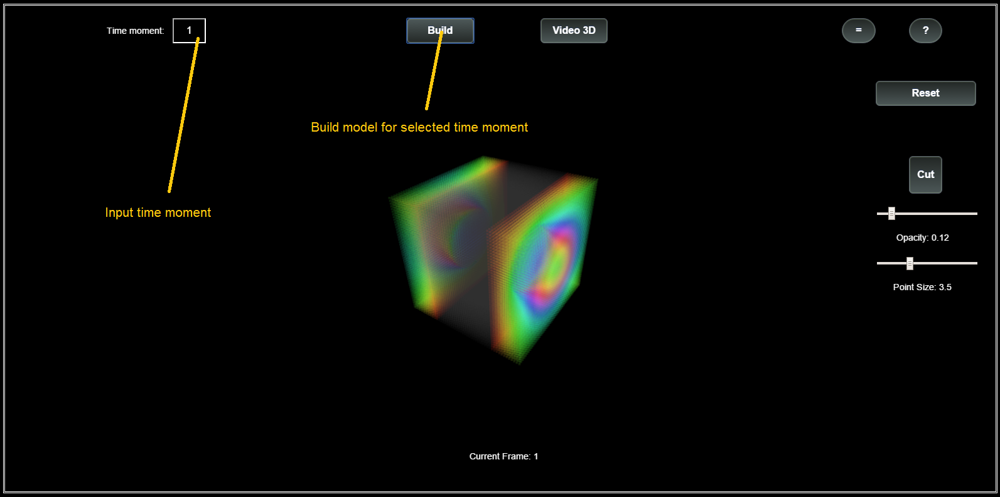
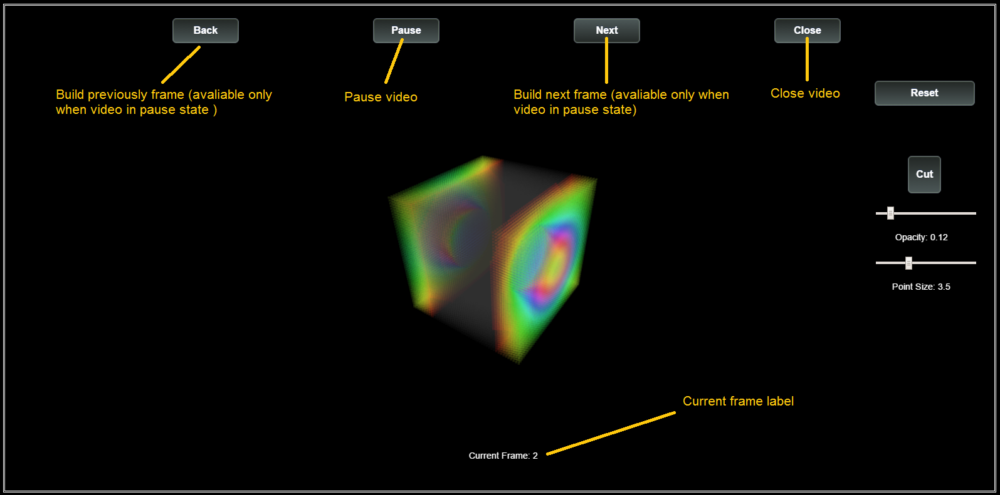
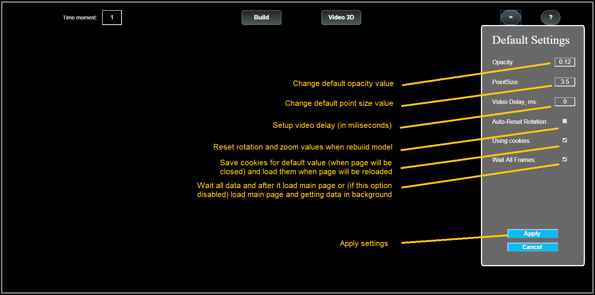

Chimera Visualization Service User Guide
Chimera Visualization Service was implemented for big data array 3D visualization.
Service has the next functionality:
1. Simple (one frame) visualization
2. Video
3. Cut parts from model
4. Rotate model, zoom, unzoom and another
Simple Visualization

Video

Additional Functionality
1. Settings
